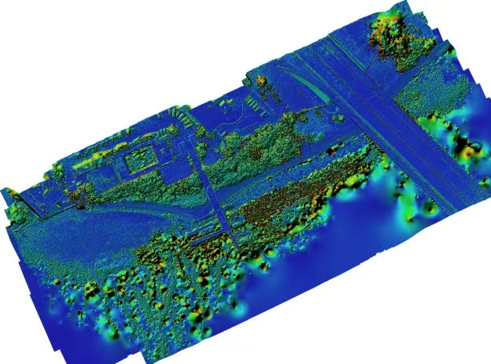
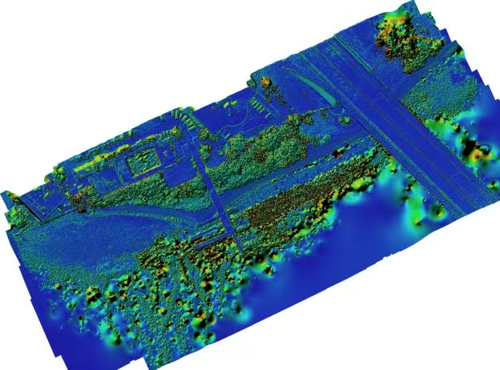

这里是标题 FANG Zuteng | Applied Remote Sensing | University of Miami
这里填技能I am a geospatial analyst and remote sensing specialist skilled in processing, modeling, and visualizing multi-source spatial data. Proficient in Python and R for automation and statistical analysis, I am experienced with ERDAS IMAGINE, ENVI, ArcGIS Pro, and Agisoft Metashape for image classification, 3D reconstruction, terrain analysis, and cartographic design.
In my projects, I utilized Landsat time-series imagery and GIS methods to analyze urban expansion in Shanghai (1984–2010) and applied Multiscale Geographically Weighted Regression (MGWR) to assess the spatial heterogeneity of Hong Kong’s urban heat island effect. Using drone imagery and Agisoft Metashape, I reconstructed 3D coastal terrain and visualized ocean currents in R. Additionally, I performed forest resource evaluation and slope analysis in ArcGIS Pro, demonstrating my ability to integrate remote sensing with spatial analytics across urban, environmental, and coastal applications.
I am committed to transforming spatial data into clear, actionable insights—supporting sustainable planning, environmental assessment, and informed decision-making through rigorous analysis and compelling visualization.
这里填技能I am a geospatial analyst and remote sensing specialist skilled in processing, modeling, and visualizing multi-source spatial data. Proficient in Python and R for automation and statistical analysis, I am experienced with ERDAS IMAGINE, ENVI, ArcGIS Pro, and Agisoft Metashape for image classification, 3D reconstruction, terrain analysis, and cartographic design.
In my projects, I utilized Landsat time-series imagery and GIS methods to analyze urban expansion in Shanghai (1984–2010) and applied Multiscale Geographically Weighted Regression (MGWR) to assess the spatial heterogeneity of Hong Kong’s urban heat island effect. Using drone imagery and Agisoft Metashape, I reconstructed 3D coastal terrain and visualized ocean currents in R. Additionally, I performed forest resource evaluation and slope analysis in ArcGIS Pro, demonstrating my ability to integrate remote sensing with spatial analytics across urban, environmental, and coastal applications.
I am committed to transforming spatial data into clear, actionable insights—supporting sustainable planning, environmental assessment, and informed decision-making through rigorous analysis and compelling visualization.


 
